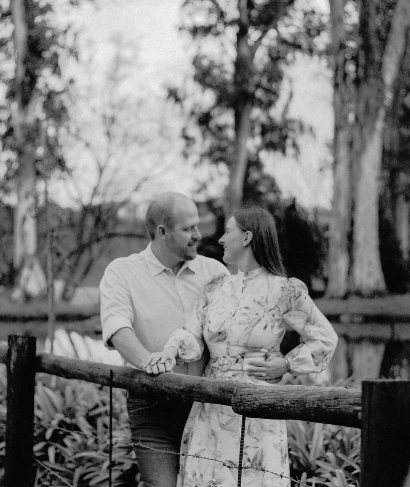
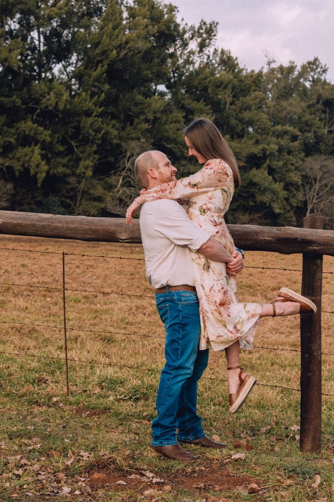
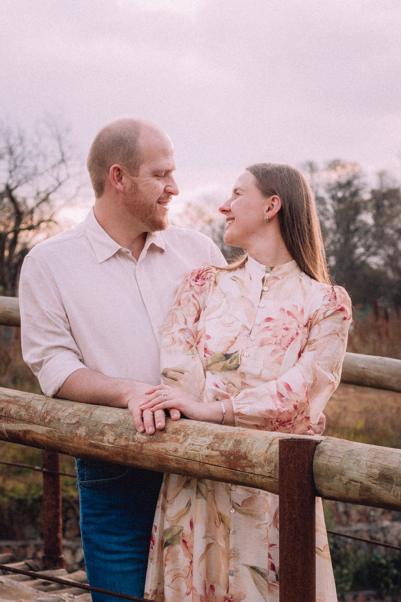

Seremonie
TBC - 16h00
7 November 2026
The Lakeside, Plot 379 Tiegerpoort Rd, Tierpoort
“I have found the one whom my soul loves”

Ons Storie
Ons sien daarna uit om hierdie besonderse dag saam met ons familie en vriende te vier.
Troudag
TBC - 16h00
Na die seremonie.
The Lakeside, Plot 379 Tiegerpoort Rd, Tierpoort.
Tydlyn

Geskenkwens
Ons huis is vol, maar ons harte is oop vir nuwe herinneringe! Indien julle graag 'n geskenk wil gee, sal ons 'n bydrae tot ons wittebrood baie waardeer.
Bankbesonderhede sal saam met die RSVP-bevestiging gestuur word.
Kleredrag
Vir ons troudag versoek ons vriendelik dat gaste asseblief swart, skakerings van grys en houtskoolkleure aantrek om 'n eenvormige, elegante atmosfeer te skep.
Vermy asseblief beige, roomkleur, sjampanjekleur en ander kleure in hierdie palet.
Indien moontlik, om ons visie van 'n formele samekoms te verwesenlik, vermy asseblief enige skemerkelkiedrag wat bo die knie eindig.
Formele broeke met 'n knoophemp en deftige skoene is gepas. Baadjies en dasse is welkom, maar opsioneel.
Akkommodasie
Elke opsie maak as 'n Google Maps soek-link oop vir vinnige rigtingaanwysings.
Ligging
Plot 379 Tiegerpoort Rd, Tierpoort, 0056. Maak die kaart oop vir rigtingaanwysings en reisbeplanning.
Maak oop in Google MapsRSVP
Liewe familie en vriende, ons sal dit baie waardeer as julle asseblief voor of op 20 September kan RSVP. Indien ons teen hierdie datum geen terugvoer ontvang nie, sal ons aanneem dat julle ongelukkig nie die spesiale dag saam met ons kan vier nie.
Hoop om jou daar te sien!
RSVPVrae
Laat weet ons asseblief teen 20 September 2026 of jy saam met ons gaan feesvier.
Indien ons nie teen die sperdatum jou RSVP ontvang nie, sal ons aanvaar dat jy ongelukkig nie die troue kan bywoon nie.
Ons vra vriendelik dat slegs die gaste wat op die uitnodiging aangedui word, die troue bywoon. Ons gastelys is sorgvuldig beplan en ons kan ongelukkig nie addisionele gaste akkommodeer nie.
Veilige parkering is beskikbaar binne die area wat deur die venue se sekuriteit beheer word, sodat jy die aand met gemoedsrus kan geniet.
Die seremonie en onthaal sal binnenshuis plaasvind. Canapés sal buite wees.
Ja, ongelukkig slegs 'n beperkte hoeveelheid. Kamers by die venue is deur ons geallokeer. Ons sal met diegene in kontak wees. Ons het wel 'n paar alternatiewe akkommodasie-opsies op die webwerf onder “Akkommodasie” gevoeg.
Om almal toe te laat om ten volle teenwoordig te wees, sal ons 'n foonvrye seremonie hê. Ons vra vriendelik dat julle tydens die seremonie julle selfone en kameras wegsit.
Die content creator se foto's sal binne 48 uur na die troue op hierdie webwerf beskikbaar wees.
Die venue aanvaar beide kaarte en kontant. Jy kan ook 'n kroegrekening open. Om 'n rekening te open, kan jy of jou motorsleutels of bestuurslisensie as deposito los.
Indien jy enige vrae het, stuur gerus vir Edward 'n WhatsApp-boodskap.
